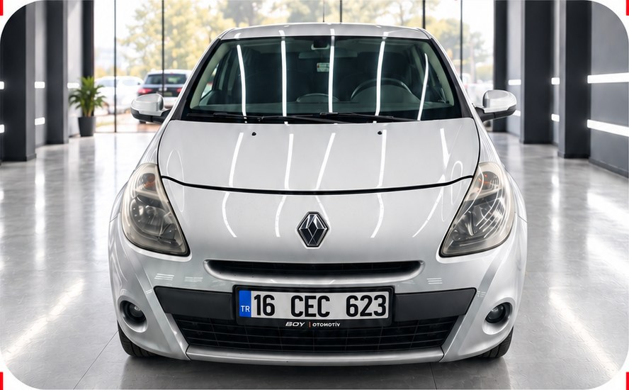
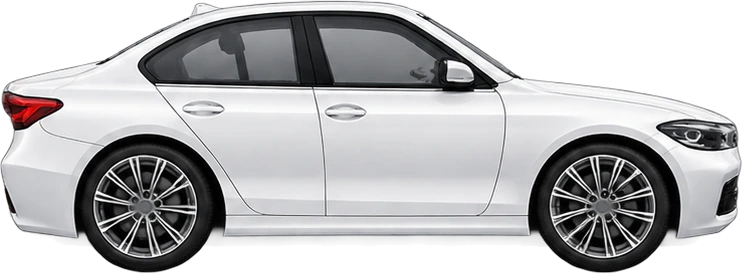
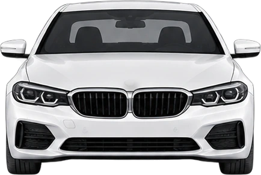
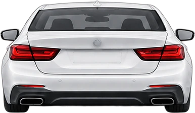
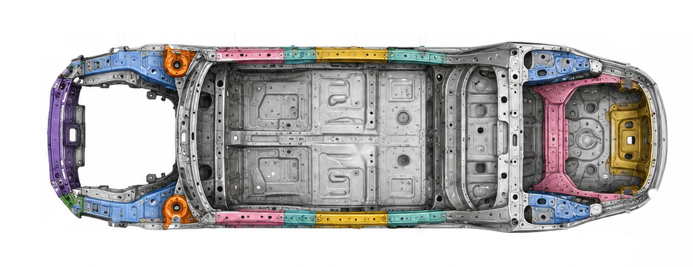
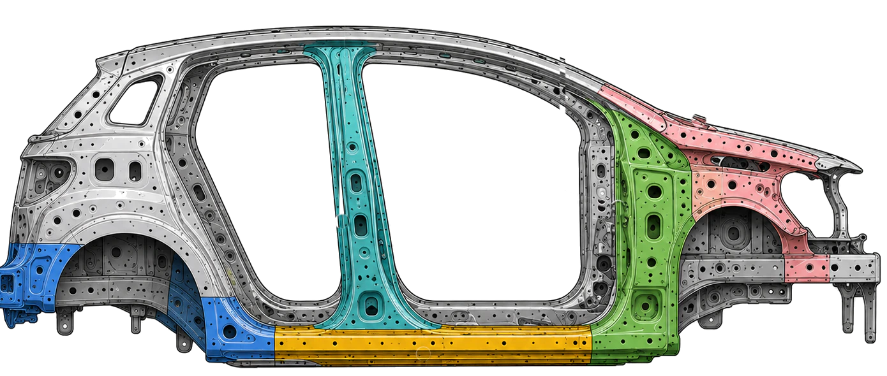

{{vehiclePlate}} - {{reportDate}}
“Tarafsız Rapor,Gerçek Güvence”

{{inspectionSummary}}
CANLI EKSPERTİZ
TR
16 CEC 623
Renault Clio
1.2 16V Expression BVR
{{pg.title}}
{{party.title}}
{{info.label}}{{info.value}}
PAKET İÇERİĞİ
14 TEST · 270 NOKTA
TEST ADINOKTA
{{test.name}}{{test.points}}
SORGULARARAÇ DOSYA EKSPERTİZ RAPORU · TRAMER 360 SORGU · KM SORGU · BORÇ SORGU
TRAMER SORGUSUTAMAMLANDI
TRAMER KAYDIKayıt yok
TOPLAM HASAR0 TL
AĞIR HASARYok
Hasar kaydı bulunamadı. Son sorgu: 29.10.2026 14:00
TRAMER 360TAMAMLANDI
SAHİP SAYISI6
PLAKA DEĞİŞİMİVar (43 > 34)
TRAFİĞE ÇIKIŞ03.11.2011
KASKOYürürlükte değil
KM SORGUSUTAMAMLANDI
82.473 kmDÜŞÜŞ YOK
{{km.date}}{{km.value}}
BORÇ SORGUSUKAYIT YOK
VERGİ BORCU (MTV)0,00 ₺
Borç kaydı bulunamadı
Son sorgu: 29.10.2026 13:49
{{item.label}}{{item.value}}
SORGU SONUCUNUN ORİJİNALİ1TRAMER 360
ARAÇRENAULT CLIO GRAND TOUR EXT EDİ 1.2
MODEL / KM DURUMU2012 · Düşüş yok
TARİHKİLOMETREPLAKA
{{km.date}}{{km.value}}{{km.plate}}
SORGU SONUCUNUN ORİJİNALİ2KM SORGU
Vergi borcu (MTV)0,00 ₺Borç kaydı bulunamadı.
Araç Dosya Ekspertiz Raporu
{{item.label}}{{item.value}}
ÜSTTEN GÖRÜNÜŞ · PARÇA DURUMLARI

KAPUT1 · BOYALI
BAGAJ KAPAĞI2 · İŞLEMLİ
ÖN TAMPONPLASTİK
ARKA TAMPONPLASTİK
46 maddeden 1 takip gerektiren bulgu var
TAKİP EDİLMELİ



İŞLEMLİ
KUSURLU PARÇALAR
{{defect.part}} — {{defect.detail}}
Şasi / Yapısal Gövde22 kontrol noktası değerlendirildi
BULGU YOK
● Orijinal 22Şasi noktalarında bulgu yok
Şasi detay görünüşleriÖn, arka, sol ve sağ yapı
BULGU YOK



● Orijinal 22Yapısal noktalarda bulgu yok
{{section.title}}{{section.score}}
{{finding.label}}{{finding.status}}
Kusurlu alan tespit edilmemiştir.
{{section.title}}{{section.score}}
Kusurlu alan tespit edilmemiştir.
19 kontrol noktasında kritik mekanik bulgu tespit edilmedi.
{{section.title}}{{section.score}}
Kusurlu alan tespit edilmemiştir.
{{resultSummary}}
Bizi tercih ettiğiniz için teşekkür ederiz.Bir üst modelde tekrar bekleriz.
16 araç ve ekspertiz fotoğrafı rapora eklendi.
{{r.label}}
DURUM
UZMAN NOTU{{expertNote}}
{{s.label}}{{s.value}}
YEDEK ANAHTAR{{spareKeyStatus}}
Ekspertiz Süresi:
45 Dk
Bu pakette garanti kapsamı yok.
{{pg.title}}{{pageLabel}}
TRAMER 360 · ORİJİNAL SONUÇKaynak kaydının sunum görünümü
{{item.label}}{{item.value}}
KM SORGU · ORİJİNAL SONUÇRENAULT CLIO GRAND TOUR EXT EDİ 1.2
MODEL YILI2012
KİLOMETRE DÜŞÜŞÜYok
TARİHKMPLAKA
{{km.date}}{{km.value}}{{km.plate}}
BULGU FOTOĞRAFI{{findingPhotoTitle}}
TEST DETAYI{{pg.title}}
{{testDetailDescription}}
{{detail.label}}{{detail.value}}
{{testDetailSummary}}
{{activePhotoLabel}}{{activePhotoCounter}}